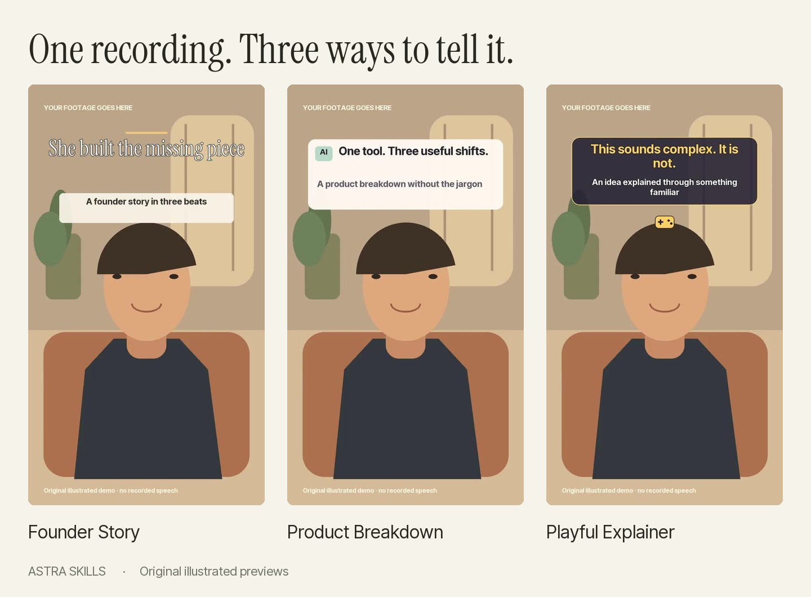

Ready-made styles, fill-in scripts, and a local browser editor. Everything in this page works offline; the first tool and model setup needs internet access.

sh start-linux.sh. The launcher installs the tools and opens the editor.If the launcher will not open, use a terminal in this folder: python3 bootstrap.py (Windows: py bootstrap.py). Leave it open while you edit.
The template editor needs no AI account. To adapt a reference or refine an awkward cut, open this folder in Codex, select GPT-6 Astra when available, and use prompts/first-edit.md. Other coding assistants can read CLAUDE.md and the same local editing instructions.
Read README.md for details, docs/troubleshooting.md for setup help, and release/TEST-REPORT.md for actual verification coverage.
Independent open-source workflow. Original artwork and code: MIT. Included fonts: SIL OFL. Model access and usage are separate.